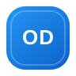

Detail-oriented professional
Open to social media, resolution, billing-focused roles, and SalesProfessional profile
Driven by service, value, and steady growth
Motivated, disciplined, and client-focused
Striving not just for success, but to be of true value
Motivated and detail-oriented professional with experience in customer service, technical executive resolution, and medical claims management, bringing strong communication, problem-solving, flexibility, and a service-driven mindset to every opportunity.
About me
Professional character with purpose-driven direction
Who I Am
Motivated and detail-oriented professional with extensive experience across diverse fields including customer service, technical executive resolution, and medical claims management.
What I Bring
My diverse background has sharpened my communication, problem-solving, and client-focused skills, empowering me to deliver exceptional service and build strong professional relationships.
How I Work
I work with focus, professionalism, and attention to detail, always aiming to create meaningful value through reliable support, clear communication, and consistent results.
Objective
Professional objectives guided by value and steady growth
Deliver Meaningful Work
To contribute effort, ideas, and discipline into tasks that create useful outcomes for teams, clients, and future opportunities.
Strengthen My Skills
To keep improving technical ability, communication, and problem solving through real work and continuous learning.
Build With Integrity
To approach responsibilities with professionalism, accountability, and respect for quality in every task.
Create Long-Term Value
To grow into opportunities where I can support larger goals, adapt quickly, and become a reliable asset in any professional environment.
Skills
Capabilities presented as the tools within the room
Core Strengths
- Capable in multi-tasking, independent, resourceful, and team-oriented.
- Strong customer service and communication skills.
- Problem solving and analytical skills in real work situations.
Professional Qualities
- Flexible, objective, and able to work with discipline and urgency.
- Business oriented with a practical and service-focused mindset.
- Dependable, adaptable, and effective in both independent and team environments.
Tools I Use
Platforms and applications I work with across communication, operations, design, and social channels
Office & Communication
Productivity, collaboration, meetings, email, and document workflow tools.

OneDrive
Operational Tools
Customer support, workflow management, monitoring, and service operations platforms.
Design & Content
Visual creation, editing, inspiration, and short-form content production tools.
Social & Email Tools
Professional networking, publishing, engagement, and social communication channels.
Educational background
A timeline of growth and academic foundations
Technical Vocational Livelihood Program (Front Office Services) Graduate
Bankal National High School
Bankal, Lapu-Lapu City, Cebu
S.Y 2018 - 2019
Junior High School
Bankal National High School
Bankal, Lapu-Lapu City, Cebu
S.Y 2016 - 2017
Elementary School
Balulang Elementary School
Cagayan de Oro City
S.Y 2012 - 2013
Experience
List of experience and practical involvement
Medical Insurance Claims Specialist
Results-CX
July 2025 - March 2026
- Handled medical insurance claims processes with accuracy and attention to detail.
- Supported claim resolution workflows and maintained professional communication standards.
- Worked in a results-driven environment requiring consistency, focus, and accountability.
Executive Resolution Manager
Qualfon, Inc.
March 2023 - June 2025
- responsible for assisting customers in selecting the best phones and plans to suit their needs, demonstrating features, and explaining technical specifications.
- Applied communication and decision-making skills in handling executive-level cases.
- Maintained service quality and professionalism in high-responsibility situations.
Passenger Assistant Officer (Conductor)
Lamado
August 2021 - January 2023
- Assisted passengers and helped maintain order, safety, and clear communication during travel.
- Performed duties requiring attentiveness, public interaction, and dependable service.
- Developed patience, adaptability, and confidence in fast-paced operational settings.
Back-up/Cook
Jollibee Pacific Mall Branch
September 2019
- Supported kitchen operations and food preparation in a fast-service environment.
- Worked efficiently under pressure while following cleanliness and preparation standards.
- Contributed to smooth daily operations through teamwork and discipline.
Service Crew / Housekeeping (Intern)
Aosmec Square Hotel
November 2018 - December 2018
- Assisted with housekeeping and guest service responsibilities during internship training.
- Learned workplace discipline, cleanliness standards, and hospitality support practices.
- Gained early professional experience in service-oriented work.
Contact
Let this office open the conversation
Feel free to reach out for professional opportunities, collaboration, or any work-related inquiries.